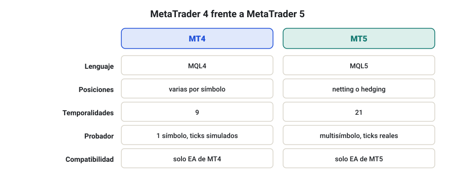
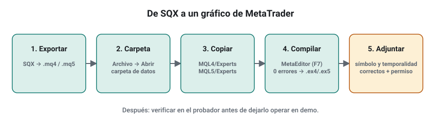
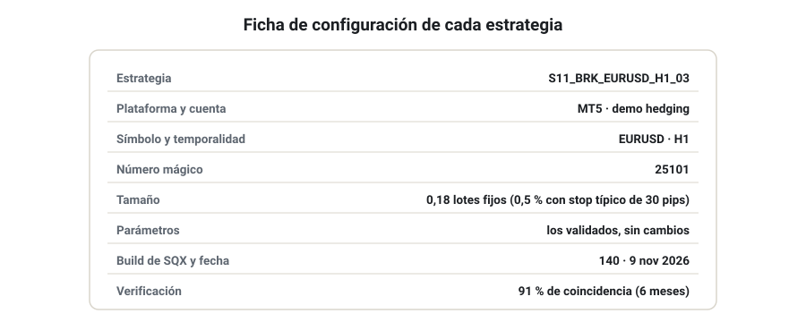
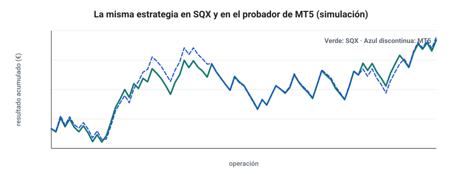
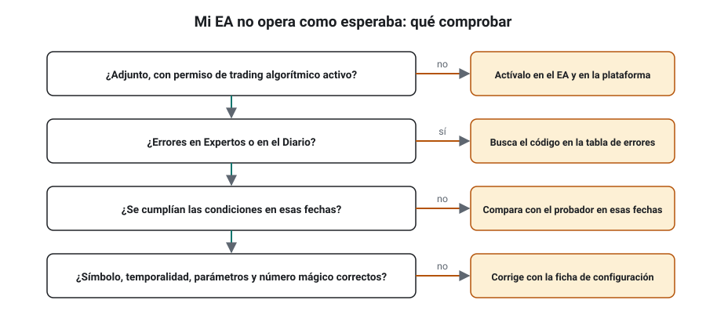

SEMANA 15 · ETAPA 4 · CARTERAS Y EJECUCIÓN
MetaTrader 4 y MetaTrader 5
Presentación de la semana
Tus estrategias viven hasta ahora dentro de SQX. Esta semana las sacarás al mundo real: las exportarás como asesores expertos (Expert Advisors, EA) para MetaTrader 4 y 5, las instalarás, las configurarás y comprobarás que hacen en la plataforma lo mismo que en SQX. Aprenderás también a leer los registros y a diagnosticar los errores más comunes. Es una semana muy práctica: el objetivo es que, al terminarla, tengas una estrategia funcionando en una cuenta demo con total control de lo que hace.
Objetivos
Al terminar la semana sabrás:
- Explicar las diferencias reales entre MT4 y MT5 que afectan a tus estrategias.
- Exportar una estrategia de SQX, instalarla y compilarla en ambas plataformas.
- Configurar sus parámetros, su número mágico y su gestión del riesgo.
- Verificar en el probador de estrategias que coincide con SQX.
- Leer los registros y diagnosticar los errores más frecuentes.
Plan de la semana (22–25 horas)
| Bloque | Horas | Qué harás |
|---|---|---|
| Clases | 6 | Seis lecciones: lectura y vídeos |
| Prácticas | 12 | Exportación, instalación, verificación y puesta en demo |
| Investigación y evaluación | 4 | Investigación I-15, entrega y examen |
| Revisión y planificación | 2 | Glosario, cuaderno y plan de la semana 16 |
Qué necesitas
- MT4 y MT5 de tu broker, con las cuentas demo de la semana 2.
- Una o dos estrategias aceptadas de tu cartera.
- SQX con la opción de exportar a MetaTrader.
Criterio para desbloquear la semana 16
Tener en estado APROBADO, con un 80 % o más cada uno:
- ☐ Examen de la semana 15
- ☐ Entrega práctica: la misma estrategia verificada en MT4 y MT5
- ☐ Investigación I-15: los ocho pasos documentados
Diferencias reales entre MT4 y MT5
Formato: clase de 35 minutos · Lectura: 30 minutos
Dos plataformas, dos lenguajes
MetaTrader 4 (2005) y MetaTrader 5 (2010) son de la misma empresa, MetaQuotes, pero no son compatibles: un EA de MT4 no funciona en MT5 ni al revés. Cada uno tiene su lenguaje: MQL4 y MQL5. SQX exporta a ambos.

| Aspecto | MetaTrader 4 | MetaTrader 5 |
|---|---|---|
| Lenguaje | MQL4 | MQL5 |
| Posiciones | Varias por símbolo (cobertura) | Cuenta netting (una neta por símbolo) o hedging (varias) |
| Temporalidades | 9 | 21 |
| Probador de estrategias | Un símbolo, un hilo; ticks simulados | Multisímbolo, varios núcleos; puede usar ticks reales del broker |
| Mercados | Sobre todo Forex y CFD | Forex, CFD y, según el broker, mercados organizados |
Lo que más te afecta
- Netting frente a hedging: si tu cuenta de MT5 es netting y dos estrategias operan el mismo símbolo en sentidos contrarios, sus posiciones se compensan en una sola. Para operar varias estrategias por símbolo en MT5, usa una cuenta hedging (semana 2).
- Calidad del probador: el probador de MT5 con ticks reales del broker suele ser más fiable para verificar que el de MT4.
- Futuro de la plataforma: muchos brokers y empresas de fondeo están dando prioridad a MT5. Conviene dominar ambas.
Comprueba que lo has entendido
- ¿Por qué un EA de MT4 no funciona en MT5?
- ¿Qué pasa en una cuenta netting si dos estrategias operan EUR/USD en sentidos contrarios?
- ¿Qué probador usarías para verificar una estrategia y por qué?
Exportar, instalar y compilar asesores expertos
Formato: taller de 40 minutos · Práctica: 2 horas
El recorrido

- Exportar desde SQX. Abre la estrategia en el databank y usa la opción de exportar código. Elige MetaTrader 4 (MQL4) o MetaTrader 5 (MQL5). Obtendrás un archivo
.mq4o.mq5. - Abrir la carpeta de datos. En MetaTrader: Archivo → Abrir carpeta de datos. Dentro está
MQL4oMQL5. - Copiar el archivo a
MQL4/ExpertsoMQL5/Experts. Si el código exportado usa bibliotecas o archivos de inclusión, SQX lo indica: cópialos aIncludeoLibraries. - Compilar. Abre el archivo en MetaEditor (doble clic o clic derecho → Modificar) y pulsa Compilar (F7). Deben salir 0 errores. Se genera un
.ex4o.ex5, que es lo que ejecuta la plataforma. - Adjuntar al gráfico. En el Navegador, arrastra el EA al gráfico del símbolo y la temporalidad correctos. Activa el permiso de trading algorítmico en la ventana del EA y el botón general de la plataforma.
Si no compila
- Comprueba que el archivo está en la carpeta correcta de la plataforma correcta (
.mq4en MT4,.mq5en MT5). - Copia los archivos de inclusión que pida el mensaje de error.
- Comprueba que tu MetaTrader está actualizado.
Comprueba que lo has entendido
- ¿En qué carpeta va un archivo
.mq5? - ¿Qué archivo genera la compilación y para qué sirve?
- ¿Qué pasa si adjuntas el EA a una temporalidad distinta?
Parámetros, número mágico y configuración de riesgo
Formato: clase de 35 minutos · Lectura: 30 minutos
Los parámetros de entrada
Al adjuntar el EA aparece la pestaña de parámetros de entrada (inputs). En los EA exportados desde SQX suelen aparecer, con nombres que pueden variar según la build:
- Los parámetros de la estrategia (periodos de indicadores, multiplicadores del ATR…). Déjalos como se validaron.
- El número mágico (magic number).
- La gestión del tamaño: lotes fijos o riesgo porcentual, según lo que configuraste en la exportación.
- Opciones de horario y de cierre, si la estrategia las usa.
El número mágico
El número mágico es un identificador que el EA pone en cada orden. Sirve para que cada EA reconozca sus propias operaciones y no toque las de otros. Reglas:
- Un número distinto por estrategia y por cuenta. Dos EA con el mismo número pueden cerrarse operaciones mutuamente.
- Anótalo en tu ficha de la cartera, junto con el símbolo y la temporalidad.
- Usa un sistema: por ejemplo,
15001,15002… (semana y número de estrategia).
El riesgo en el EA
Configura el tamaño según tu plan de la semana 14:
- Si el EA admite riesgo porcentual, introduce el riesgo por operación de tu perfil (por ejemplo, 0,5 %).
- Si solo admite lotes fijos, calcula el tamaño con la fórmula de la semana 4 a partir del stop típico y revísalo periódicamente.
- Comprueba siempre el lote mínimo y el paso de lote del símbolo en tu broker.

Comprueba que lo has entendido
- ¿Para qué sirve el número mágico?
- ¿Qué pasa si dos EA comparten número mágico?
- ¿Cómo calcularías el lote fijo para una estrategia con un stop típico de 30 pips y un riesgo del 0,5 % sobre 10.000 €?
Probador de estrategias y verificación frente a SQX
Formato: taller de 40 minutos · Práctica: 2–3 horas
Por qué verificar
La traducción de la estrategia al código de MetaTrader puede introducir diferencias: cómo se calcula un indicador, a qué hora se cierra una vela, cómo se gestionan los stops. Verificar consiste en comprobar que, con los mismos datos y condiciones, la estrategia hace las mismas operaciones en MetaTrader que en SQX.
Cómo hacerlo
- En el probador de estrategias de MetaTrader (Ver → Probador de estrategias, o Ctrl+R), elige el EA, el símbolo, la temporalidad y un periodo de 6 a 12 meses.
- Usa el modelo más preciso disponible: en MT5, «Cada tick basado en ticks reales»; en MT4, «Cada tick».
- Fija el mismo tamaño (lotes fijos) que en SQX y un spread parecido.
- En SQX, haz un backtest del mismo periodo con los datos de tu broker (semana 9) o con los datos más parecidos posibles.
- Compara las listas de operaciones: fechas, horas, dirección, precios de entrada y salida.

Qué diferencias son normales
- Precios de entrada distintos en una fracción de pip, por diferencias de datos.
- Alguna operación de más o de menos en los bordes de los datos o en velas con huecos.
- Resultados finales parecidos, con diferencias de pocos puntos porcentuales.
Qué diferencias indican un problema
- Muchas operaciones que no coinciden en fecha y hora: zona horaria de los datos (semana 5).
- Operaciones en la dirección contraria: error de configuración o de exportación.
- Un número de operaciones muy distinto: temporalidad equivocada, parámetros cambiados o reglas de horario mal traducidas.
Comprueba que lo has entendido
- ¿Qué modelo de ticks usarías en MT5 para verificar?
- ¿Qué indica que muchas operaciones estén desplazadas una hora?
- ¿Qué porcentaje de coincidencia exiges antes de pasar a demo?
Logs, errores y diagnóstico
Formato: clase de 30 minutos · Lectura: 25 minutos
Dónde mirar
- Pestaña Expertos (en la ventana Terminal de MT4 o la Caja de herramientas de MT5): mensajes de los EA, incluidos los errores al enviar órdenes.
- Pestaña Diario (Journal): mensajes de la plataforma: conexiones, inicios de sesión, órdenes.
- Archivos de registro: en la carpeta de datos,
Logs(plataforma) yMQL4/LogsoMQL5/Logs(EA), un archivo por día. Guárdalos si necesitas reclamar al broker.
Errores frecuentes
| Problema | MT4 (código) | MT5 (código de retorno) | Causa habitual |
|---|---|---|---|
| Stops no válidos | 130 | 10016 | Stop o objetivo demasiado cerca del precio |
| Volumen no válido | 131 | 10014 | Lote menor que el mínimo o fuera del paso |
| Sin fondos suficientes | 134 | 10019 | Margen insuficiente |
| Recotización | 138 | 10004 | El precio cambió al ejecutar |
| Trading no permitido | 4109 | 10027 | Botón de trading algorítmico desactivado |
| Mercado cerrado | 132 | 10018 | Fuera del horario del símbolo |
Cómo diagnosticar

- ¿El EA está adjunto y con la cara sonriente o el icono activo? ¿Está activado el trading algorítmico?
- ¿Hay mensajes en Expertos o en el Diario? Busca el código de error.
- ¿Se cumplían las condiciones de entrada? Compara con el probador en esas mismas fechas.
- ¿Coinciden símbolo, temporalidad, parámetros y número mágico con tu ficha?
Comprueba que lo has entendido
- ¿Qué significa un error 130 en MT4?
- ¿Dónde están los archivos de registro de los EA?
- Tu EA no abre ninguna operación en tres días. ¿Qué compruebas primero?
Taller: la misma estrategia en MT4 y MT5
Formato: taller guiado de 60 minutos · Práctica: 5–6 horas
Paso 1 · Exporta
Exporta tu mejor estrategia a MQL4 y a MQL5. Anota la build de SQX y la fecha.
Paso 2 · Instala y compila
En ambas plataformas. Guarda capturas de la compilación sin errores.
Paso 3 · Configura
Rellena la ficha de configuración (figura 15.3) con un número mágico distinto en cada plataforma.
Paso 4 · Verifica
Haz la verificación de la lección 4 en ambas plataformas para el mismo periodo. Calcula el porcentaje de operaciones coincidentes con SQX.
Paso 5 · Pon en demo
Si la verificación supera el 90 %, adjunta el EA a un gráfico en cada demo y déjalo operando. Revisa los registros cada día durante una semana.
Comprueba que lo has entendido
- ¿Qué porcentaje de coincidencia obtuviste en cada plataforma?
- ¿Encontraste algún error en los registros?
- ¿Hizo el EA en demo lo que esperabas durante la semana?
Glosario de la semana
| Término | Inglés | Definición |
|---|---|---|
| Asesor experto | Expert Advisor (EA) | Programa que opera de forma automática en MetaTrader |
| Carpeta de datos | Data folder | Carpeta de MetaTrader con los programas, registros y configuraciones |
| Compilar | Compile | Convertir el código fuente en un programa ejecutable |
| Diario | Journal | Registro de mensajes de la plataforma |
| MetaEditor | MetaEditor | Editor de código de MetaTrader |
| MQL4 / MQL5 | MQL4 / MQL5 | Lenguajes de programación de MT4 y MT5 |
| Número mágico | Magic number | Identificador que un EA pone en sus órdenes |
| Parámetros de entrada | Inputs | Valores configurables de un EA |
| Probador de estrategias | Strategy Tester | Herramienta de MetaTrader para hacer backtests de EA |
| Trading algorítmico (permiso) | Algo Trading / AutoTrading | Interruptor que permite operar a los EA |
| Verificación | Verification | Comprobación de que la plataforma replica las operaciones de SQX |
Ejercicios obligatorios
E1 · Netting. Dos estrategias operan EUR/USD: una compra 0,10 lotes y, dos horas después, otra vende 0,10 lotes. ¿Qué posición queda en una cuenta netting? ¿Y en una hedging?
E2 · Carpetas. Abre la carpeta de datos de tus dos plataformas y describe su estructura principal.
E3 · Compilación. Compila tu EA en ambas plataformas y anota los avisos (warnings) que aparezcan, aunque no sean errores.
E4 · Números mágicos. Diseña el sistema de números mágicos para tu cartera y aplícalo.
E5 · Lotes. Calcula el lote fijo para cada estrategia de tu cartera con tu perfil de riesgo, su stop típico y el valor del pip.
E6 · Verificación. Presenta la tabla de comparación de operaciones entre SQX y cada plataforma para el mismo periodo.
E7 · Errores. Provoca a propósito en demo dos errores (por ejemplo, desactivar el trading algorítmico y poner un lote menor que el mínimo) y documenta el mensaje que aparece.
E8 · Diagnóstico. Un EA de H1 no ha abierto operaciones en una semana y en el probador sí lo habría hecho. Escribe tu lista de comprobación en orden.
E9 · Logs. Localiza el archivo de registro de un día en que tu EA operó y extrae las líneas de apertura y cierre de una operación.
E10 · Ficha de la cartera. Completa la ficha de configuración de todas las estrategias de tu cartera.
Investigación I-15 y entrega práctica
Investigación I-15 · ¿Replica MetaTrader las operaciones de SQX?
Paso 1 · Hipótesis. Ejemplo: «Con datos del mismo broker, al menos el 90 % de las operaciones de mi estrategia en el probador de MT5 coinciden con las de SQX en día, hora y dirección».
Paso 2 · Fuentes. Cita documentación oficial de MetaTrader o de StrategyQuant sobre los modelos de ticks o la verificación.
Paso 3 · Datos. Un periodo de 6–12 meses con los datos del broker en SQX y en MetaTrader.
Paso 4 · Diseño. Define qué cuenta como «coincidente» (misma vela de entrada y misma dirección), la tolerancia de precio y cómo tratarás las operaciones sin pareja.
Pasos 5 y 6. Ejecuta los backtests en SQX, MT4 y MT5.
Paso 7 · Comparación. Porcentaje de coincidencia, diferencia media de precios y diferencia de resultado final en cada plataforma.
Paso 8 · Conclusiones. ¿Se confirma? ¿Qué explica las diferencias? ¿Qué plataforma replica mejor?
Entrega práctica · La misma estrategia en MT4 y MT5
Qué entregar
| Archivo | Contenido |
|---|---|
CODIGO_S15_ENT |
Documento con capturas de la compilación, la ficha de configuración, la tabla de verificación y el registro de la semana en demo |
CODIGO_S15_EA |
Los archivos .mq4 y .mq5 exportados |
CODIGO_S15_INV |
Investigación I-15 |
| Ejercicios | E1 a E10 |
Cómo se evaluará
Se valora que la verificación sea rigurosa y que las diferencias estén explicadas. Una estrategia puesta en demo sin verificación, o con menos del 90 % de coincidencia sin explicación, deja la entrega en SUSPENSO.
Examen de la semana 15 · Variante A
Tiempo orientativo: 60 minutos · Puntuación: 100 puntos · Aprobado: 80 puntos · Puedes usar calculadora, pero no el material del curso ni el tutor de IA. Si suspendes, repetirás con otra variante.
Parte A · Opción múltiple (30 puntos, 2 por pregunta)
Parte B · Cálculo (45 puntos, 15 por ejercicio)
B1. Cuenta de 10.000 €, riesgo del 0,5 %, stop típico de 30 pips en EUR/USD (EUR/USD a 1,0800). a) Calcula el lote fijo. b) El lote mínimo es 0,01 y el paso 0,01: ¿qué lote introduces? c) Si el stop real de una operación es de 45 pips, ¿qué riesgo real asume esa operación con ese lote?
B2. En la verificación de 6 meses, SQX hizo 84 operaciones y MT5, 81. Coinciden en vela y dirección 76. a) ¿Qué porcentaje de las operaciones de SQX coincide? b) ¿Cumple el criterio del 90 %? c) Nombra dos causas posibles de las diferencias.
B3. Tu cartera tiene 4 estrategias en EUR/USD y GBP/USD, cada una en MT4 y en MT5, y quieres números mágicos únicos. Diseña un sistema de numeración con 5 cifras que indique plataforma, símbolo y estrategia, y escribe los 8 números.
Parte C · Razonamiento (25 puntos)
En un máximo de 250 palabras: describe los pasos completos desde una estrategia aceptada en SQX hasta tenerla operando en una demo de MT5 con garantías, y qué comprobarías en cada paso.